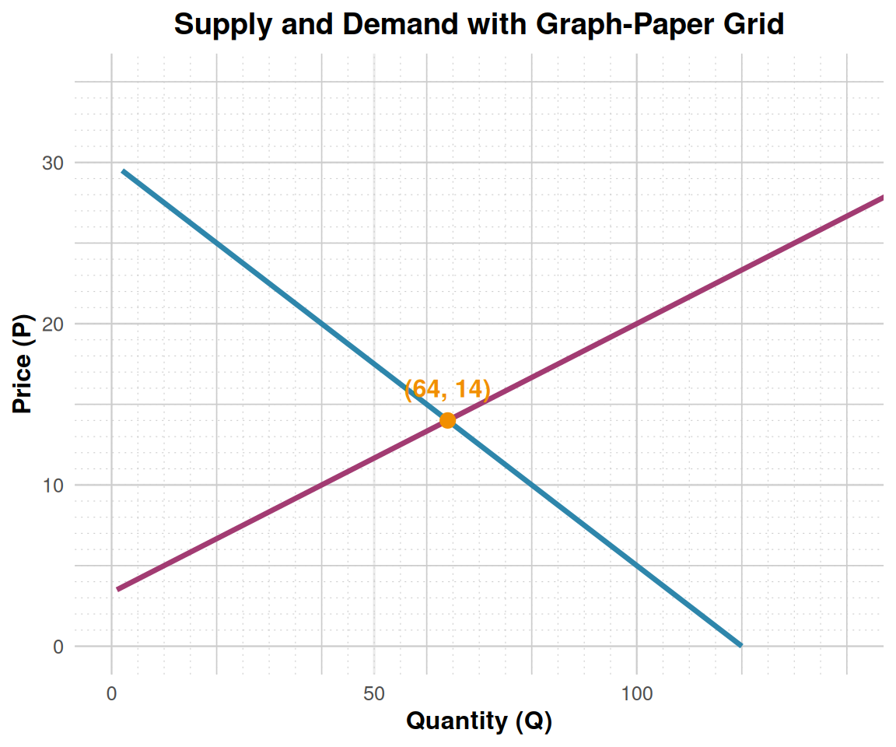

Alert - Make Sure to Check Here for Announcements!
Linear Demand and Supply Models
Based on Cowen & Tabarrok MRU Principles of Microeconomics, Ch. 3–4
Author
Professor [Your Name]
Published
October 8, 2025
Graph Paper Grids
This section overlays demand and supply curves onto a graph-paper style grid (light gray major and minor grid lines) to aid students in reading values directly from the plot. Here’s the updated graph-paper section with negative supply values filtered out, preventing the flat 0 segments at small P:
# Sample curves for demonstration demand <-create_demand(120, 4) supply <-create_supply(-20, 6) p_vals <-seq(0, 35, 0.5) df_grid <-tibble(P = p_vals,Qd =demand(p_vals),Qs =supply(p_vals) ) eq_point <-tibble(Q =64, P =14)# Filter supply to positive quantities to remove jagged zero segment df_supply <-filter(df_grid, Qs >0) df_demand <-filter(df_grid, Qd >0)ggplot() +# Graph-paper gridgeom_hline(yintercept =seq(0, 35, 5), color = grid_color, size =0.3) +geom_vline(xintercept =seq(0, 140, 20), color = grid_color, size =0.3) +geom_hline(yintercept =seq(0, 35, 1), color = grid_color, linetype ="dotted", size =0.2) +geom_vline(xintercept =seq(0, 140, 5), color = grid_color, linetype ="dotted", size =0.2) +# Demand curve (all Qd >= 0)geom_line(data = df_demand, aes(x = Qd, y = P), color = demand_color, size =1.2) +# Supply curve only where Qs > 0geom_line(data = df_supply, aes(x = Qs, y = P), color = supply_color, size =1.2) +# Equilibrium pointgeom_point(data = eq_point, aes(x = Q, y = P), color = equilibrium_color, size =3) +annotate("text", x =64, y =16, label ="(64, 14)", color = equilibrium_color, fontface ="bold") +labs(title ="Supply and Demand with Graph-Paper Grid",x ="Quantity (Q)",y ="Price (P)" ) +coord_cartesian(xlim =c(0, 140), ylim =c(0, 35))

This filters out the jagged zeros of the supply curve for prices where supply is zero or negative.
# Introduction to Linear Demand and Supply
## Learning Objectives
By the end of this lecture, you will be able to:
Define and graph linear demand and supply functions
Calculate market equilibrium algebraically and graphically
Analyze the effects of market shifts on equilibrium
Compute consumer and producer surplus
Evaluate the impacts of taxes and price controls
Apply elasticity concepts to linear demand curves
# Linear Demand and Supply Functions
## The Linear Demand Curve
A linear demand curve has the form:
\[Q_D = a - bP\]
where: - \(a > 0\) is the quantity intercept (maximum quantity when \(P = 0\)) - \(b > 0\) is the slope parameter (how responsive quantity is to price) - The price intercept occurs at \(P = \frac{a}{b}\) (choke price)
The Linear Supply Curve
A linear supply curve has the form:
\[Q_S = c + dP\]
where: - \(c\) can be positive or negative (quantity intercept) - \(d > 0\) is the slope parameter (positive relationship between price and quantity) - If \(c < 0\), the supply curve has a minimum price \(P = -\frac{c}{d}\) before positive quantities
# Market Equilibrium
## Finding Equilibrium Algebraically
Market equilibrium occurs where \(Q_D = Q_S\):
For our example: \(Q_D = 120 - 4P\) and \(Q_S = -20 + 6P\)
\[120 - 4P = -20 + 6P\]\[140 = 10P\]\[P^* = 14\]
Substituting back: \(Q^* = 120 - 4(14) = 64\)
## General Equilibrium Formula
For general linear curves \(Q_D = a - bP\) and \(Q_S = c + dP\):
\[P^* = \frac{a - c}{b + d}\]
\[Q^* = \frac{ad + bc}{b + d}\]
# Market Shifts
## Demand Shifts
An increase in demand shifts the entire demand curve rightward (parallel shift). This could result from: - Increase in consumer income (normal goods) - Increase in price of substitutes - Decrease in price of complements - Positive change in consumer preferences
# Consumer and Producer Surplus
## Consumer Surplus
Consumer surplus is the area between the demand curve and the market price, representing the net benefit to consumers.
For a linear demand curve, consumer surplus is: \[CS = \frac{1}{2}(P_{choke} - P^*)Q^*\]
where \(P_{choke} = \frac{a}{b}\) is the price intercept of demand.
Producer Surplus
Producer surplus is the area between the market price and the supply curve, representing the net benefit to producers.
For a linear supply curve, producer surplus is: \[PS = \frac{1}{2}(P^* - P_{min})Q^*\]
where \(P_{min} = -\frac{c}{d}\) is the minimum price for positive supply.
# Tax Incidence and Deadweight Loss
## Per-Unit Tax
A per-unit tax of amount \(t\) creates a wedge between the price buyers pay and the price sellers receive. The tax can be imposed on either buyers or sellers with the same final outcome.
Tax on Sellers
When a tax \(t\) is imposed on sellers, the supply curve shifts up by \(t\): - Original supply: \(Q_S = c + dP_S\) - After-tax supply: \(Q_S = c + d(P_B - t) = (c - dt) + dP_B\)
## Tax Incidence
The tax incidence shows how the tax burden is split between buyers and sellers:
The side of the market with less elastic (steeper) curve bears more of the tax burden.
# Price Controls
## Price Floors
A price floor is a minimum legal price. It’s only binding when set above equilibrium.
Price Ceilings
A price ceiling is a maximum legal price. It’s only binding when set below equilibrium.
# Price Elasticity of Demand
## Definition and Formula
Price elasticity of demand measures the responsiveness of quantity demanded to price changes:
\[\varepsilon = \frac{\% \text{ change in } Q_D}{\% \text{ change in } P} = \frac{dQ_D/dP \cdot P}{Q_D}\]
For linear demand \(Q_D = a - bP\): \[\varepsilon = -b \cdot \frac{P}{Q}\]
## Interpreting Elasticity
\(|\varepsilon| > 1\): Elastic (quantity very responsive to price)
\(|\varepsilon| = 1\): Unit elastic (proportional response)
\(|\varepsilon| < 1\): Inelastic (quantity less responsive to price)
Elasticity Along Linear Demand
Elasticity varies along a linear demand curve:
# Summary and Key Takeaways
## Market Mechanics 1. Linear demand: \(Q_D = a - bP\) (negative slope) 2. Linear supply: \(Q_S = c + dP\) (positive slope)
3. Equilibrium: Where \(Q_D = Q_S\), solving for \(P^*\) and \(Q^*\)
## Welfare Analysis - Consumer Surplus: Area under demand curve, above price - Producer Surplus: Area above supply curve, below price - Total Surplus: \(CS + PS\) measures market efficiency
Policy Effects
Taxes: Create deadweight loss, incidence depends on relative elasticities
Price floors: Binding when above equilibrium → surplus
Price ceilings: Binding when below equilibrium → shortage
Elasticity Insights
Measures price responsiveness of demand
Varies along linear demand curves
Key for predicting policy impacts and business decisions
This comprehensive treatment of linear demand and supply models provides the foundation for understanding market behavior, policy impacts, and welfare analysis in microeconomics. The mathematical tools and graphical techniques demonstrated here are essential for analyzing real-world economic phenomena.